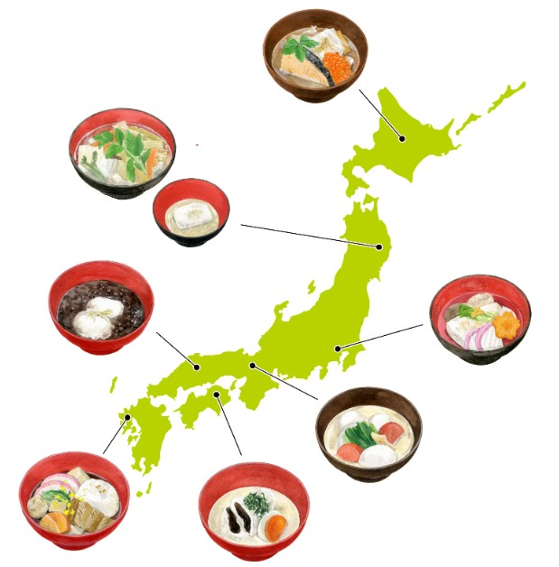

On New Year's Day, we will prepare Osechi dishes with various meanings in wish for happiness. The type and meaning of the dishes vary depending on the region and the times, but the people and family cooking together with the old god who is the fortune of the new year, and the people eat together, and people are doing the health and abundant of the year. I have come. At that time, eat using a celebration. Both sides are thinner, which means that God uses the other, and the other is used. The celebration is used in celebration seats such as marriage and ozoni, and for celebration.
The Japanese celebrate the New Year Day with traditional New Year foods called Osechi Ryori (おせち料理). It is considered the most important meal of the year as each dish serves as well-wishes for the coming year. Osechi ryōri is prepared to welcome the toshigami (New Year gods). To give a break from food preparation at this time of year, they are made to last for several days using much sugar, soy sauce, mirin and sake.
Ozoni is a Japanese soup containing mochi rice cakes. It is an important food the Japanese serve every New Year’s Day along with a traditional new year dish called Osechi, an assortment of colorful dishes packed together in special boxes. Locals offered this dish to the gods in a ceremony on New Year’s Eve. The preparation of zouni varies both by household and region. It has numerous regional variations in Japan including its mochi or rice cakes shapes. Japanese believe that God’s Spirit dwells inside the mochi in Zouni.
